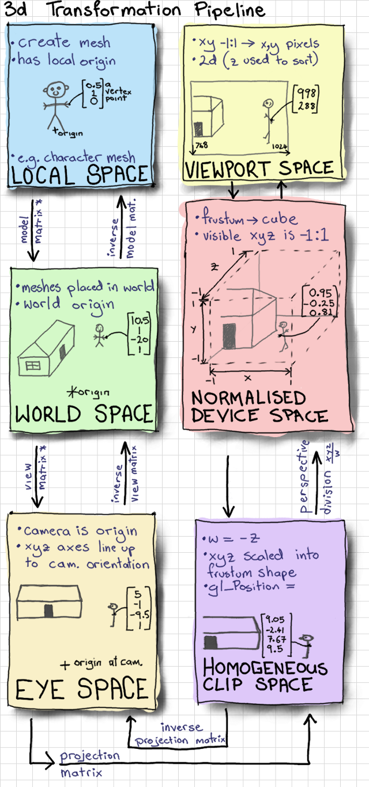
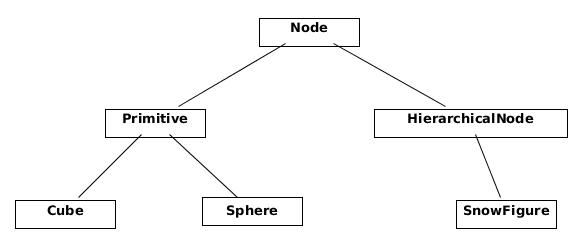
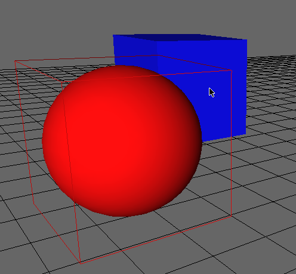
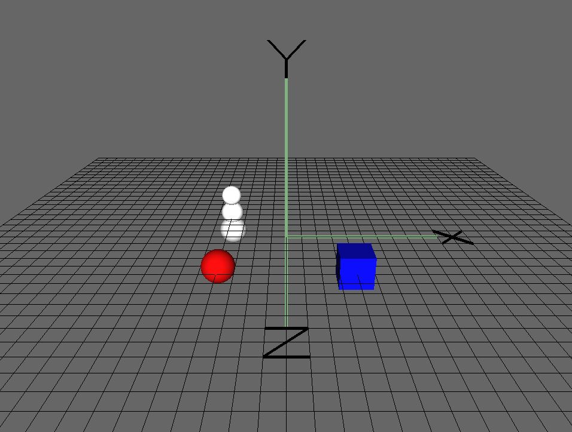

A 3D Modeller
by Erick Dransch
Erick is a software developer and 2D and 3D computer graphics enthusiast. He has worked on video games, 3D special effects software, and computer aided design tools. If it involves simulating reality, chances are he’d like to learn more about it. You can find him online at erickdransch.com.
Introduction
Humans are innately creative. We continuously design and build novel, useful, and interesting things. In modern times, we write software to assist in the design and creation process. Computer-aided design (CAD) software allows creators to design buildings, bridges, video game art, film monsters, 3D printable objects, and many other things before building a physical version of the design.
At their core, CAD tools are a method of abstracting the 3-dimensional design into something that can be viewed and edited on a 2-dimensional screen. To fulfill that definition, CAD tools must offer three basic pieces of functionality. Firstly, they must have a data structure to represent the object that’s being designed: this is the computer’s understanding of the 3-dimensional world that the user is building. Secondly, the CAD tool must offer some way to display the design on the user’s screen. The user is designing a physical object with 3 dimensions, but the computer screen has only 2 dimensions. The CAD tool must model how we perceive objects, and draw them to the screen in a way that the user can understand all 3 dimensions of the object. Thirdly, the CAD tool must offer a way to interact with the object being designed. The user must be able to add to and modify the design in order to produce the desired result. Additionally, all tools would need a way to save and load designs from disk so that users can collaborate, share, and save their work.
A domain-specific CAD tool offers many additional features for the specific requirements of the domain. For example, an architecture CAD tool would offer physics simulations to test climate stresses on the building, a 3D printing tool would have features that check whether the object is actually valid to print, an electrical CAD tool would simulate the physics of electricity running through copper, and a film special effects suite would include features to accurately simulate pyrokinetics.
However, all CAD tools must include at least the three features discussed above: a data structure to represent the design, the ability to display it to the screen, and a method to interact with the design.
With that in mind, let’s explore how we can represent a 3D design, display it to the screen, and interact with it, in 500 lines of Python.
Rendering as a Guide
The driving force behind many of the design decisions in a 3D modeller is the rendering process. We want to be able to store and render complex objects in our design, but we want to keep the complexity of the rendering code low. Let us examine the rendering process, and explore the data structure for the design that allows us to store and draw arbitarily complex objects with simple rendering logic.
Managing Interfaces and the Main Loop
Before we begin rendering, there are a few things we need to set up. First, we need to create a window to display our design in. Secondly, we want to communicate with graphics drivers to render to the screen. We would rather not communicate directly with graphics drivers, so we use a cross-platform abstraction layer called OpenGL, and a library called GLUT (the OpenGL Utility Toolkit) to manage our window.
A Note About OpenGL
OpenGL is a graphical application programming interface for cross-platform development. It’s the standard API for developing graphics applications across platforms. OpenGL has two major variants: Legacy OpenGL and Modern OpenGL.
Rendering in OpenGL is based on polygons defined by vertices and normals. For example, to render one side of a cube, we specify the 4 vertices and the normal of the side.
Legacy OpenGL provides a “fixed function pipeline”. By setting global variables, the programmer can enable and disable automated implementations of features such as lighting, coloring, face culling, etc. OpenGL then automatically renders the scene with the enabled functionality. This functionality is deprecated.
Modern OpenGL, on the other hand, features a programmable rendering pipeline where the programmer writes small programs called “shaders” that run on dedicated graphics hardware (GPUs). The programmable pipeline of Modern OpenGL has replaced Legacy OpenGL.
In this project, despite the fact that it is deprecated, we use Legacy OpenGL. The fixed functionality provided by Legacy OpenGL is very useful for keeping code size small. It reduces the amount of linear algebra knowledge required, and it simplifies the code we will write.
About GLUT
GLUT, which is bundled with OpenGL, allows us to create operating system windows and to register user interface callbacks. This basic functionality is sufficient for our purposes. If we wanted a more full-featured library for window management and user interaction, we would consider using a full windowing toolkit like GTK or Qt.
The Viewer
To manage the setting up of GLUT and OpenGL, and to drive the rest of the modeller, we create a class called Viewer.
We use a single Viewer instance, which manages window creation and rendering, and contains the main loop for our program.
In the initialization process for Viewer, we create the GUI window and initialize OpenGL.
The function init_interface creates the window that the modeller will be rendered into and specifies the function to be called when the design needs to rendered.
The init_opengl function sets up the OpenGL state needed for the project. It sets the matrices, enables backface culling,
registers a light to illuminate the scene, and tells OpenGL that we would like objects to be colored.
The init_scene function creates the Scene objects and places some initial nodes to get the user started. We will see more about the Scene data structure shortly.
Finally, init_interaction registers callbacks for user interaction, as we’ll discuss later.
After initializing Viewer, we call glutMainLoop to transfer program execution to GLUT. This function never returns. The callbacks we have registered
on GLUT events will be called when those events occur.
class Viewer(object):
def __init__(self):
""" Initialize the viewer. """
self.init_interface()
self.init_opengl()
self.init_scene()
self.init_interaction()
init_primitives()
def init_interface(self):
""" initialize the window and register the render function """
glutInit()
glutInitWindowSize(640, 480)
glutCreateWindow("3D Modeller")
glutInitDisplayMode(GLUT_SINGLE | GLUT_RGB)
glutDisplayFunc(self.render)
def init_opengl(self):
""" initialize the opengl settings to render the scene """
self.inverseModelView = numpy.identity(4)
self.modelView = numpy.identity(4)
glEnable(GL_CULL_FACE)
glCullFace(GL_BACK)
glEnable(GL_DEPTH_TEST)
glDepthFunc(GL_LESS)
glEnable(GL_LIGHT0)
glLightfv(GL_LIGHT0, GL_POSITION, GLfloat_4(0, 0, 1, 0))
glLightfv(GL_LIGHT0, GL_SPOT_DIRECTION, GLfloat_3(0, 0, -1))
glColorMaterial(GL_FRONT_AND_BACK, GL_AMBIENT_AND_DIFFUSE)
glEnable(GL_COLOR_MATERIAL)
glClearColor(0.4, 0.4, 0.4, 0.0)
def init_scene(self):
""" initialize the scene object and initial scene """
self.scene = Scene()
self.create_sample_scene()
def create_sample_scene(self):
cube_node = Cube()
cube_node.translate(2, 0, 2)
cube_node.color_index = 2
self.scene.add_node(cube_node)
sphere_node = Sphere()
sphere_node.translate(-2, 0, 2)
sphere_node.color_index = 3
self.scene.add_node(sphere_node)
hierarchical_node = SnowFigure()
hierarchical_node.translate(-2, 0, -2)
self.scene.add_node(hierarchical_node)
def init_interaction(self):
""" init user interaction and callbacks """
self.interaction = Interaction()
self.interaction.register_callback('pick', self.pick)
self.interaction.register_callback('move', self.move)
self.interaction.register_callback('place', self.place)
self.interaction.register_callback('rotate_color', self.rotate_color)
self.interaction.register_callback('scale', self.scale)
def main_loop(self):
glutMainLoop()
if __name__ == "__main__":
viewer = Viewer()
viewer.main_loop()
render function, we should discuss a little bit of linear algebra.
Coordinate Space
For our purposes, a Coordinate Space is an origin point and a set of 3 basis vectors, usually the $x$, $y$, and $z$ axes.
Point
Any point in 3 dimensions can be represented as an offset in the $x$, $y$, and $z$ directions from the origin point. The representation of a point is relative to the coordinate space that the point is in. The same point has different representations in different coordinate spaces. Any point in 3 dimensions can be represented in any 3-dimensional coordinate space.
Vector
A vector is an $x$, $y$, and $z$ value representing the difference between two points in the $x$, $y$, and $z$ axes, respectively.
Transformation Matrix
In computer graphics, it is convenient to use multiple different coordinate spaces for different types of points. Transformation matrices convert points from one coordinate space to another coordinate space. To convert a vector $v$ from one coordinate space to another, we multiply by a transformation matrix $M$: $v’ = M v$. Some common transformation matrices are translations, scaling, and rotations.
Model, World, View, and Projection Coordinate Spaces

To draw an item to the screen, we need to convert between a few different coordinate spaces.The right hand side of Figure: Transformation Pipeline1, including all of the transformations from Eye Space to Viewport Space will all be handled for us by OpenGL.
Conversion from eye space to homogeneous clip space is handled by gluPerspective, and conversion to normalized device space and viewport space is handled by glViewport.
These two matrices are multiplied together and stored as the GL_PROJECTION matrix.
We don’t need to know the terminology or the details of how these matrices work for this project.
We do, however, need to manage the left hand side of the diagram ourselves. We define a matrix which converts points in the model (also called a mesh) from the model spaces into the world space, called the model matrix. We alse define the view matrix, which converts from the world space into the eye space. In this project, we combine these two matrices to obtain the ModelView matrix.
To learn more about the full graphics rendering pipeline, and the coordinate spaces involved, refer to chapter 2 of Real Time Rendering, or another introductory computer graphics book.
Rendering with the Viewer
The render function begins by setting up any of the OpenGL state that needs to be done at render time. It initializes the projection matrix via init_view and uses data from the interaction member to initialize the ModelView matrix with the transformation matrix that converts from the scene space to world space. We will see more about the Interaction class below. It clears the screen with glClear and it tells the scene to render itself, and then renders the unit grid.
We disable OpenGL’s lighting before rendering the grid. With lighting disabled, OpenGL renders items with solid colors, rather than simulating a light source. This way, the grid has visual differentiation from the scene.
Finally, glFlush signals to the graphics driver that we are ready for the buffer to be flushed and displayed to the screen.
# class Viewer
def render(self):
""" The render pass for the scene """
self.init_view()
glEnable(GL_LIGHTING)
glClear(GL_COLOR_BUFFER_BIT | GL_DEPTH_BUFFER_BIT)
# Load the modelview matrix from the current state of the trackball
glMatrixMode(GL_MODELVIEW)
glPushMatrix()
glLoadIdentity()
loc = self.interaction.translation
glTranslated(loc[0], loc[1], loc[2])
glMultMatrixf(self.interaction.trackball.matrix)
# store the inverse of the current modelview.
currentModelView = numpy.array(glGetFloatv(GL_MODELVIEW_MATRIX))
self.modelView = numpy.transpose(currentModelView)
self.inverseModelView = inv(numpy.transpose(currentModelView))
# render the scene. This will call the render function for each object
# in the scene
self.scene.render()
# draw the grid
glDisable(GL_LIGHTING)
glCallList(G_OBJ_PLANE)
glPopMatrix()
# flush the buffers so that the scene can be drawn
glFlush()
def init_view(self):
""" initialize the projection matrix """
xSize, ySize = glutGet(GLUT_WINDOW_WIDTH), glutGet(GLUT_WINDOW_HEIGHT)
aspect_ratio = float(xSize) / float(ySize)
# load the projection matrix. Always the same
glMatrixMode(GL_PROJECTION)
glLoadIdentity()
glViewport(0, 0, xSize, ySize)
gluPerspective(70, aspect_ratio, 0.1, 1000.0)
glTranslated(0, 0, -15)
What to Render: The Scene
Now that we’ve initialized the rendering pipeline to handle drawing in the world coordinate space, what are we going to render? Recall that our goal is
to have a design consisting of 3D models. We need a data structure to contain the design, and we need use this data structure to render the design.
Notice above that we call self.scene.render() from the viewer’s render loop. What is the scene?
The Scene class is the interface to the data structure we use to represent the design. It abstracts away details of the data structure and provides the
necessary interface functions required to interact with the design, including functions to render, add items, and manipulate items. There is one Scene object, owned by the viewer.
The Scene instance keeps a list of all of the items in the scene, called node_list. It also keeps track of the selected item.
The render function on the scene simply calls render on each of the members of node_list.
class Scene(object):
# the default depth from the camera to place an object at
PLACE_DEPTH = 15.0
def __init__(self):
# The scene keeps a list of nodes that are displayed
self.node_list = list()
# Keep track of the currently selected node.
# Actions may depend on whether or not something is selected
self.selected_node = None
def add_node(self, node):
""" Add a new node to the scene """
self.node_list.append(node)
def render(self):
""" Render the scene. """
for node in self.node_list:
node.render()
Nodes
In the Scene’s render function, we call render on each of the items in the Scene’s node_list. But what are the elements
of that list? We call them nodes.
Conceptually, a node is anything that can be placed in the scene.
In object-oriented software, we write Node as an abstract base class. Any classes that represent objects to be placed in the Scene will inherit from Node.
This base class allows us to reason about the scene abstractly.
The rest of the code base doesn’t need to know about the details of the objects it displays; it only needs to know that they are of the class Node.
Each type of Node defines its own behavior for rendering itself and for any other interactions.
The Node keeps track of important data about itself: translation matrix, scale matrix, color, etc. Multiplying the node’s translation matrix by
its scaling matrix gives the transformation matrix from the node’s model coordinate space to the world coordinate space.
The node also stores an axis-aligned bounding box (AABB). We’ll see more about AABBs when we discuss selection below.
The simplest concrete implementation of Node is a primitive. A primitive is a single solid shape that can be added the scene. In this project, the primitives are Cube and Sphere.
class Node(object):
""" Base class for scene elements """
def __init__(self):
self.color_index = random.randint(color.MIN_COLOR, color.MAX_COLOR)
self.aabb = AABB([0.0, 0.0, 0.0], [0.5, 0.5, 0.5])
self.translation_matrix = numpy.identity(4)
self.scaling_matrix = numpy.identity(4)
self.selected = False
def render(self):
""" renders the item to the screen """
glPushMatrix()
glMultMatrixf(numpy.transpose(self.translation_matrix))
glMultMatrixf(self.scaling_matrix)
cur_color = color.COLORS[self.color_index]
glColor3f(cur_color[0], cur_color[1], cur_color[2])
if self.selected: # emit light if the node is selected
glMaterialfv(GL_FRONT, GL_EMISSION, [0.3, 0.3, 0.3])
self.render_self()
if self.selected:
glMaterialfv(GL_FRONT, GL_EMISSION, [0.0, 0.0, 0.0])
glPopMatrix()
def render_self(self):
raise NotImplementedError(
"The Abstract Node Class doesn't define 'render_self'")
class Primitive(Node):
def __init__(self):
super(Primitive, self).__init__()
self.call_list = None
def render_self(self):
glCallList(self.call_list)
class Sphere(Primitive):
""" Sphere primitive """
def __init__(self):
super(Sphere, self).__init__()
self.call_list = G_OBJ_SPHERE
class Cube(Primitive):
""" Cube primitive """
def __init__(self):
super(Cube, self).__init__()
self.call_list = G_OBJ_CUBE
Rendering nodes is based on the transformation matrices that each node stores. The transformation matrix for a node is the combination of its scaling matrix and its translation matrix. Regardless of the type of node, the first step to rendering is to set the
OpenGL ModelView matrix to the transformation matrix to convert from the model coordinate space to the view coordinate space.
Once the OpenGL matrices are up to date, we call render_self to tell the node to make the necessary OpenGL calls to draw itself. Finally,
we undo any changes we made to the OpenGL state for this specific node. We use the glPushMatrix and glPopMatrix functions in OpenGL to save and restore
the state of the ModelView matrix before and after we render the node.
Notice that the node stores its color, location, and scale, and applies these to the OpenGL state before rendering.
If the node is currently selected, we make it emit light. This way, the user has a visual indication of which node they have selected.
To render primitives, we use the call lists feature from OpenGL.
An OpenGL call list is a series of OpenGL calls that are defined once and bundled together under a single name.
The calls can be dispatched with glCallList(LIST_NAME). Each primitive (Sphere and Cube) defines the call list required to render it (not shown).
For example, the call list for a cube draws the 6 faces of the cube, with the center at the origin and the edges exactly 1 unit long.
# Pseudocode Cube definition
# Left face
((-0.5, -0.5, -0.5), (-0.5, -0.5, 0.5), (-0.5, 0.5, 0.5), (-0.5, 0.5, -0.5)),
# Back face
((-0.5, -0.5, -0.5), (-0.5, 0.5, -0.5), (0.5, 0.5, -0.5), (0.5, -0.5, -0.5)),
# Right face
((0.5, -0.5, -0.5), (0.5, 0.5, -0.5), (0.5, 0.5, 0.5), (0.5, -0.5, 0.5)),
# Front face
((-0.5, -0.5, 0.5), (0.5, -0.5, 0.5), (0.5, 0.5, 0.5), (-0.5, 0.5, 0.5)),
# Bottom face
((-0.5, -0.5, 0.5), (-0.5, -0.5, -0.5), (0.5, -0.5, -0.5), (0.5, -0.5, 0.5)),
# Top face
((-0.5, 0.5, -0.5), (-0.5, 0.5, 0.5), (0.5, 0.5, 0.5), (0.5, 0.5, -0.5))
Using only primitives would be quite limiting for modelling applications. 3D models are generally made up of multiple primitives
(or triangular meshes, which are outside the scope of this project).
Fortunately, our design of the Node class facilitates Scene nodes that are made up of multiple primitives. In fact, we can support arbitrary groupings
of nodes with no added complexity.
As motivation, let us consider a very basic figure: a typical snowman, or snow figure, made up of three spheres. Even though the figure is comprised of three separate primitives, we would like to be able to treat it as a single object.
We create a class called HierarchicalNode, a Node that contains other nodes. It manages a list of “children”.
The render_self function for hierarchical nodes simply calls render_self on each of the child nodes.
With the HierarchicalNode class, it is very easy to add figures to the scene.
Now, defining the snow figure is as simple as specifying the shapes that comprise it, and their relative positions and sizes.

```python class HierarchicalNode(Node): def init(self): super(HierarchicalNode, self).init() self.child_nodes = []def render_self(self):
for child in self.child_nodes:
child.render()
python
class SnowFigure(HierarchicalNode):
def init(self):
super(SnowFigure, self).init()
self.child_nodes = [Sphere(), Sphere(), Sphere()]
self.child_nodes[0].translate(0, -0.6, 0) # scale 1.0
self.child_nodes[1].translate(0, 0.1, 0)
self.child_nodes[1].scaling_matrix = numpy.dot(
self.scaling_matrix, scaling([0.8, 0.8, 0.8]))
self.child_nodes[2].translate(0, 0.75, 0)
self.child_nodes[2].scaling_matrix = numpy.dot(
self.scaling_matrix, scaling([0.7, 0.7, 0.7]))
for child_node in self.child_nodes:
child_node.color_index = color.MIN_COLOR
self.aabb = AABB([0.0, 0.0, 0.0], [0.5, 1.1, 0.5])
``
You might observe that theNodeobjects form a tree data structure. Therenderfunction, through hierarchical nodes, does a depth-first traversal through the
tree. As it traverses, it keeps a stack ofModelViewmatrices, used for conversion into the world space.
At each step, it pushes the currentModelViewmatrix onto the stack, and when it completes rendering of all child nodes,
it pops the matrix off the stack, leaving the parent node'sModelView` matrix at the top of the stack.
By making the Node class extensible in this way, we can add new types of shapes to the scene without changing any of the other code for scene
manipulation and rendering. Using the node concept to abstract away the fact that one Scene object may have many children is known as the Composite design pattern.
User Interaction
Now that our modeller is capable of storing and displaying the scene, we need a way to interact with it. There are two types of interactions that we need to facilitate. First, we need the capability of changing the viewing perspective of the scene. We want to be able to move the eye, or camera, around the scene. Second, we need to be able to add new nodes and to modify nodes in the scene.
To enable user interaction, we need to know when the user presses keys or moves the mouse. Luckily, the operating system already knows when these events happen. GLUT allows us to register a function to be called whenever a certain event occurs. We write functions to interpret key presses and mouse movement, and tell GLUT to call those functions when the corresponding keys are pressed. Once we know which keys the user is pressing, we need to interpret the input and apply the intended actions to the scene.
The logic for listening to operating system events and interpreting their meaning is found in the Interaction class.
The Viewer class we wrote earlier owns the single instance of Interaction.
We will use the GLUT callback mechanism to register functions to be called when a mouse button is pressed (glutMouseFunc), when the mouse is moved (glutMotionFunc), when a keyboard button is pressed (glutKeyboardFunc), and when the arrow keys are pressed (glutSpecialFunc).
We’ll see the functions that handle input events shortly.
class Interaction(object):
def __init__(self):
""" Handles user interaction """
# currently pressed mouse button
self.pressed = None
# the current location of the camera
self.translation = [0, 0, 0, 0]
# the trackball to calculate rotation
self.trackball = trackball.Trackball(theta = -25, distance=15)
# the current mouse location
self.mouse_loc = None
# Unsophisticated callback mechanism
self.callbacks = defaultdict(list)
self.register()
def register(self):
""" register callbacks with glut """
glutMouseFunc(self.handle_mouse_button)
glutMotionFunc(self.handle_mouse_move)
glutKeyboardFunc(self.handle_keystroke)
glutSpecialFunc(self.handle_keystroke)
Operating System Callbacks
In order to meaningfully interpret user input,
we need to combine knowledge of the mouse position, mouse buttons, and keyboard. Because interpreting user input into meaningful actions requires many lines of code, we encapsulate it in a separate class, away from the main code path.
The Interaction class hides unrelated complexity from the rest of the codebase and translates operating system events into application-level events.
# class Interaction
def translate(self, x, y, z):
""" translate the camera """
self.translation[0] += x
self.translation[1] += y
self.translation[2] += z
def handle_mouse_button(self, button, mode, x, y):
""" Called when the mouse button is pressed or released """
xSize, ySize = glutGet(GLUT_WINDOW_WIDTH), glutGet(GLUT_WINDOW_HEIGHT)
y = ySize - y # invert the y coordinate because OpenGL is inverted
self.mouse_loc = (x, y)
if mode == GLUT_DOWN:
self.pressed = button
if button == GLUT_RIGHT_BUTTON:
pass
elif button == GLUT_LEFT_BUTTON: # pick
self.trigger('pick', x, y)
elif button == 3: # scroll up
self.translate(0, 0, 1.0)
elif button == 4: # scroll up
self.translate(0, 0, -1.0)
else: # mouse button release
self.pressed = None
glutPostRedisplay()
def handle_mouse_move(self, x, screen_y):
""" Called when the mouse is moved """
xSize, ySize = glutGet(GLUT_WINDOW_WIDTH), glutGet(GLUT_WINDOW_HEIGHT)
y = ySize - screen_y # invert the y coordinate because OpenGL is inverted
if self.pressed is not None:
dx = x - self.mouse_loc[0]
dy = y - self.mouse_loc[1]
if self.pressed == GLUT_RIGHT_BUTTON and self.trackball is not None:
# ignore the updated camera loc because we want to always
# rotate around the origin
self.trackball.drag_to(self.mouse_loc[0], self.mouse_loc[1], dx, dy)
elif self.pressed == GLUT_LEFT_BUTTON:
self.trigger('move', x, y)
elif self.pressed == GLUT_MIDDLE_BUTTON:
self.translate(dx/60.0, dy/60.0, 0)
else:
pass
glutPostRedisplay()
self.mouse_loc = (x, y)
def handle_keystroke(self, key, x, screen_y):
""" Called on keyboard input from the user """
xSize, ySize = glutGet(GLUT_WINDOW_WIDTH), glutGet(GLUT_WINDOW_HEIGHT)
y = ySize - screen_y
if key == 's':
self.trigger('place', 'sphere', x, y)
elif key == 'c':
self.trigger('place', 'cube', x, y)
elif key == GLUT_KEY_UP:
self.trigger('scale', up=True)
elif key == GLUT_KEY_DOWN:
self.trigger('scale', up=False)
elif key == GLUT_KEY_LEFT:
self.trigger('rotate_color', forward=True)
elif key == GLUT_KEY_RIGHT:
self.trigger('rotate_color', forward=False)
glutPostRedisplay()
Internal Callbacks
In the code snippet above, you will notice that when the Interaction instance interprets a user action, it calls self.trigger with a string describing
the action type. The trigger function on the Interaction class is part of a simple callback system that we will use for handling application-level
events.
Recall that the init_interaction function on the Viewer class registers callbacks on the Interaction instance by calling register_callback.
# class Interaction
def register_callback(self, name, func):
self.callbacks[name].append(func)
Interaction class calls all of the saved callbacks it has for that specific event:
# class Interaction
def trigger(self, name, *args, **kwargs):
for func in self.callbacks[name]:
func(*args, **kwargs)
This application-level callback system abstracts away the need for the rest of the system to know about operating system input. Each application-level callback represents a meaningful request within the application.
The Interaction class acts as a translator between operating system events and application-level events.
This means that if we decided to port the modeller to another toolkit in addition to GLUT, we would only need to replace the Interaction class
with a class that converts the input from the new toolkit into the same set of meaningful application-level callbacks. We use callbacks and arguments in Table: Interaction callbacks and arguments.
| Callback | Arguments | Purpose |
|---|---|---|
pick |
x:number, y:number | Selects the node at the mouse pointer location. |
move |
x:number, y:number | Moves the currently selected node to the mouse pointer location. |
place |
shape:string, x:number, y:number | Places a shape of the specified type at the mouse pointer location. |
rotate_color |
forward:boolean | Rotates the color of the currently selected node through the list of colors, forwards or backwards. |
scale |
up:boolean | Scales the currently selected node up or down, according to parameter. |
- Interaction callbacks and arguments
This simple callback system provides all of the functionality we need for this project. In a production 3D modeller, however, user interface objects are often created and destroyed dynamically. In that case, we would need a more sophisticated event listening system, where objects can both register and un-register callbacks for events.
Interfacing with the Scene
With our callback mechanism, we can receive meaningful information about user input events from the Interaction class. We are ready to apply these actions to the Scene.
Moving the Scene
In this project, we accomplish camera motion by transforming the scene. In other words, the
camera is at a fixed location and user input moves the scene instead of moving the camera. The camera is placed at [0, 0, -15] and
faces the world space origin. (Alternatively, we could change the perspective matrix to move the camera instead of the scene.
This design decision has very little impact on the rest of the project.)
Revisiting the render function in the Viewer, we see that the Interaction state is used to transform the OpenGL matrix state before rendering the Scene.
There are two types of interaction with the scene: rotation and translation.
Rotating the Scene with a Trackball
We accomplish rotation of the scene by using a trackball algorithm. The trackball is an intuitive interface for manipulating the scene in three dimensions. Conceptually, a trackball interface functions as if the scene was inside a transparent globe. Placing a hand on the surface of the globe and pushing it rotates the globe. Similarly, clicking the right mouse button and moving it on the screen rotates the scene. You can find out more about the theory of the trackball at the OpenGL Wiki. In this project, we use a trackball implementation provided as part of Glumpy.
We interact with the trackball using the drag_to function, with the current location of the mouse as the starting location and the change in mouse location as parameters.
self.trackball.drag_to(self.mouse_loc[0], self.mouse_loc[1], dx, dy)
The resulting rotation matrix is trackball.matrix in the viewer when the scene is rendered.
Aside: Quaternions
Rotations are traditionally represented in one of two ways. The first is a rotation value around each axis; you could store this as a 3-tuple of floating point numbers. The other common representation for rotations is a quaternion, an element composed of a vector with $x$, $y$, and $z$ coordinates, and a $w$ rotation. Using quaternions has numerous benefits over per-axis rotation; in particular, they are more numerically stable. Using quaternions avoids problems like gimbal lock. The downside of quaternions is that they are less intuitive to work with and harder to understand. If you are brave and would like to learn more about quaternions, you can refer to this explanation.
The trackball implementation avoids gimbal lock by using quaternions internally to store the rotation of the scene. Luckily, we do not need to work with quaternions directly, because the matrix member on the trackball converts the rotation to a matrix.
Translating the Scene
Translating the scene (i.e., sliding it) is much simpler than rotating it. Scene translations are provided with the mouse wheel and the left mouse button. The left mouse
button translates the scene in the $x$ and $y$ coordinates. Scrolling the mouse wheel translates the scene in the z coordinate
(towards or away from the camera). The Interaction class stores the current scene translation and modifies it with the translate function.
The viewer retrieves the Interaction camera location during rendering to use in a glTranslated call.
Selecting Scene Objects
Now that the user can move and rotate the entire scene to get the perspective they want, the next step is to allow the user to modify and manipulate the objects that make up the scene.
In order for the user to manipulate objects in the scene, they need to be able to select items.
To select an item, we use the current projection matrix to generate a ray that represents the mouse click, as if the mouse pointer shoots a ray into the scene. The selected node is the closest node to the camera with which the ray intersects. Thus the problem of picking reduced to the problem of finding intersections between a ray and nodes in the scene. So the question is: How do we tell if the ray hits a node?
Calculating exactly whether a ray intersects with a node is a challenging problem in terms of both complexity of code and of performance. We would need to write a ray-object intersection check for each type of primitive. For scene nodes with complex mesh geometries with many faces, calculating exact ray-object intersection would require testing the ray against each face and would be computationally expensive.
For the purposes of keeping the code compact and performance reasonable, we use a simple, fast approximation for the ray-object intersection test. In our implementation, each node stores an axis-aligned bounding box (AABB), which is an approximation of the space it occupies. To test whether a ray intersects with a node, we test whether the ray intersects with the node’s AABB. This implementation means that all nodes share the same code for intersection tests, and it means that the performance cost is constant and small for all node types.
# class Viewer
def get_ray(self, x, y):
"""
Generate a ray beginning at the near plane, in the direction that
the x, y coordinates are facing
Consumes: x, y coordinates of mouse on screen
Return: start, direction of the ray
"""
self.init_view()
glMatrixMode(GL_MODELVIEW)
glLoadIdentity()
# get two points on the line.
start = numpy.array(gluUnProject(x, y, 0.001))
end = numpy.array(gluUnProject(x, y, 0.999))
# convert those points into a ray
direction = end - start
direction = direction / norm(direction)
return (start, direction)
def pick(self, x, y):
""" Execute pick of an object. Selects an object in the scene. """
start, direction = self.get_ray(x, y)
self.scene.pick(start, direction, self.modelView)
To determine which node was clicked on, we traverse the scene to test whether the ray hits any nodes. We deselect the currently selected node and then choose the node with the intersection closest to the ray origin.
# class Scene
def pick(self, start, direction, mat):
"""
Execute selection.
start, direction describe a Ray.
mat is the inverse of the current modelview matrix for the scene.
"""
if self.selected_node is not None:
self.selected_node.select(False)
self.selected_node = None
# Keep track of the closest hit.
mindist = sys.maxint
closest_node = None
for node in self.node_list:
hit, distance = node.pick(start, direction, mat)
if hit and distance < mindist:
mindist, closest_node = distance, node
# If we hit something, keep track of it.
if closest_node is not None:
closest_node.select()
closest_node.depth = mindist
closest_node.selected_loc = start + direction * mindist
self.selected_node = closest_node
Node class, the pick function tests whether the ray intersects with the axis-aligned bounding box of the Node.
If a node is selected, the select function toggles the selected state of the node.
Notice that the AABB’s ray_hit function accepts the transformation matrix between the box’s coordinate space and the
ray’s coordinate space as the third parameter. Each node applies its own transformation to the matrix before making the ray_hit function call.
# class Node
def pick(self, start, direction, mat):
"""
Return whether or not the ray hits the object
Consume:
start, direction form the ray to check
mat is the modelview matrix to transform the ray by
"""
# transform the modelview matrix by the current translation
newmat = numpy.dot(
numpy.dot(mat, self.translation_matrix),
numpy.linalg.inv(self.scaling_matrix)
)
results = self.aabb.ray_hit(start, direction, newmat)
return results
def select(self, select=None):
""" Toggles or sets selected state """
if select is not None:
self.selected = select
else:
self.selected = not self.selected
The ray-AABB selection approach is very simple to understand and implement. However, the results are wrong in certain situations.

For example, in the case of theSphere primitive, the sphere itself only touches the AABB in the centre of each of the AABB’s faces.
However if the user clicks on the corner of the Sphere’s AABB, the collision will be detected with the Sphere, even if the user intended to click
past the Sphere onto something behind it (Figure: AABB Error).
This trade-off between complexity, performance, and accuracy is common in computer graphics and in many areas of software engineering.
Modifying Scene Objects
Next, we would like to allow the user to manipulate the selected nodes. They might want to move, resize, or change the color of the selected node.
When the user inputs a command to manipulate a node, the Interaction class converts the input into the action that the user intended, and calls the corresponding callback.
When the Viewer receives a callback for one of these events, it calls the appropriate function on the Scene, which in turn applies the transformation to the currently selected Node.
# class Viewer
def move(self, x, y):
""" Execute a move command on the scene. """
start, direction = self.get_ray(x, y)
self.scene.move_selected(start, direction, self.inverseModelView)
def rotate_color(self, forward):
"""
Rotate the color of the selected Node.
Boolean 'forward' indicates direction of rotation.
"""
self.scene.rotate_selected_color(forward)
def scale(self, up):
""" Scale the selected Node. Boolean up indicates scaling larger."""
self.scene.scale_selected(up)
Changing Color
Manipulating color is accomplished with a list of possible colors. The user can cycle through the list with the arrow keys. The scene dispatches the color change command to the currently selected node.
# class Scene
def rotate_selected_color(self, forwards):
""" Rotate the color of the currently selected node """
if self.selected_node is None: return
self.selected_node.rotate_color(forwards)
Each node stores its current color. The rotate_color function simply modifies the current color of the node. The color is passed to OpenGL with glColor when the node is rendered.
# class Node
def rotate_color(self, forwards):
self.color_index += 1 if forwards else -1
if self.color_index > color.MAX_COLOR:
self.color_index = color.MIN_COLOR
if self.color_index < color.MIN_COLOR:
self.color_index = color.MAX_COLOR
Scaling Nodes
As with color, the scene dispatches any scaling modifications to the selected node, if there is one.
# class Scene
def scale_selected(self, up):
""" Scale the current selection """
if self.selected_node is None: return
self.selected_node.scale(up)
Each node stores a current matrix that stores its scale. A matrix that scales by parameters $x$, $y$ and $z$ in those respective directions is:
$$ \begin{bmatrix} x & 0 & 0 & 0 \ 0 & y & 0 & 0 \ 0 & 0 & z & 0 \ 0 & 0 & 0 & 1 \ \end{bmatrix} $$
When the user modifies the scale of a node, the resulting scaling matrix is multiplied into the current scaling matrix for the node.
# class Node
def scale(self, up):
s = 1.1 if up else 0.9
self.scaling_matrix = numpy.dot(self.scaling_matrix, scaling([s, s, s]))
self.aabb.scale(s)
The function scaling returns such a matrix, given a list of the $x$, $y$, and $z$ scaling factors.
def scaling(scale):
s = numpy.identity(4)
s[0, 0] = scale[0]
s[1, 1] = scale[1]
s[2, 2] = scale[2]
s[3, 3] = 1
return s
Moving Nodes
In order to translate a node, we use the same ray calculation we used for picking. We pass the ray that represents the current mouse location in to the scene’s
move function. The new location of the node should be on the ray.
In order to determine where on the ray to place the node, we need to know the node’s distance from the camera. Since we stored the node’s location and distance
from the camera when it was selected (in the pick function), we can use that data here.
We find the point that is the same distance from the camera along the target ray and we calculate the vector difference between the new and old locations.
We then translate the node by the resulting vector.
# class Scene
def move_selected(self, start, direction, inv_modelview):
"""
Move the selected node, if there is one.
Consume:
start, direction describes the Ray to move to
mat is the modelview matrix for the scene
"""
if self.selected_node is None: return
# Find the current depth and location of the selected node
node = self.selected_node
depth = node.depth
oldloc = node.selected_loc
# The new location of the node is the same depth along the new ray
newloc = (start + direction * depth)
# transform the translation with the modelview matrix
translation = newloc - oldloc
pre_tran = numpy.array([translation[0], translation[1], translation[2], 0])
translation = inv_modelview.dot(pre_tran)
# translate the node and track its location
node.translate(translation[0], translation[1], translation[2])
node.selected_loc = newloc
Notice that the new and old locations are defined in the camera coordinate space. We need our translation to be defined in the world coordinate space. Thus, we convert the camera space translation into a world space translation by multiplying by the inverse of the modelview matrix.
As with scale, each node stores a matrix which represents its translation. A translation matrix looks like:
$$ \begin{bmatrix} 1 & 0 & 0 & x \ 0 & 1 & 0 & y \ 0 & 0 & 1 & z \ 0 & 0 & 0 & 1 \ \end{bmatrix} $$
When the node is translated, we construct a new translation matrix for the current translation, and multiply it into the node’s translation matrix for use during rendering.
# class Node
def translate(self, x, y, z):
self.translation_matrix = numpy.dot(
self.translation_matrix,
translation([x, y, z]))
The translation function returns a translation matrix given a list representing the $x$, $y$, and $z$ translation distances.
def translation(displacement):
t = numpy.identity(4)
t[0, 3] = displacement[0]
t[1, 3] = displacement[1]
t[2, 3] = displacement[2]
return t
Placing Nodes
Node placement uses techniques from both picking and translation. We use the same ray calculation for the current mouse location to determine where to place the node.
# class Viewer
def place(self, shape, x, y):
""" Execute a placement of a new primitive into the scene. """
start, direction = self.get_ray(x, y)
self.scene.place(shape, start, direction, self.inverseModelView)
To place a new node, we first create the new instance of the corresponding type of node and add it to the scene. We want to place the node underneath the user’s cursor, so we find a point on the ray, at a fixed distance from the camera. Again, the ray is represented in camera space, so we convert the resulting translation vector into the world coordinate space by multiplying it by the inverse modelview matrix. Finally, we translate the new node by the calculated vector.
# class Scene
def place(self, shape, start, direction, inv_modelview):
"""
Place a new node.
Consume:
shape the shape to add
start, direction describes the Ray to move to
inv_modelview is the inverse modelview matrix for the scene
"""
new_node = None
if shape == 'sphere': new_node = Sphere()
elif shape == 'cube': new_node = Cube()
elif shape == 'figure': new_node = SnowFigure()
self.add_node(new_node)
# place the node at the cursor in camera-space
translation = (start + direction * self.PLACE_DEPTH)
# convert the translation to world-space
pre_tran = numpy.array([translation[0], translation[1], translation[2], 1])
translation = inv_modelview.dot(pre_tran)
new_node.translate(translation[0], translation[1], translation[2])
Summary
Congratulations! We’ve successfully implemented a tiny 3D modeller!

We saw how to develop an extensible data structure to represent the objects in the scene. We noticed that using the Composite design pattern and a tree-based data structure makes it easy to traverse the scene for rendering and allows us to add new types of nodes with no added complexity. We leveraged this data structure to render the design to the screen, and manipulated OpenGL matrices in the traversal of the scene graph. We built a very simple callback system for application-level events, and used it to encapsulate handling of operating system events. We discussed possible implementations for ray-object collision detection, and the trade-offs between correctness, complexity, and performance. Finally, we implemented methods for manipulating the contents of the scene.You can expect to find these same basic building blocks in production 3D software. The scene graph structure and relative coordinate spaces are found in many types of 3D graphics applications, from CAD tools to game engines. One major simplification in this project is in the user interface. A production 3D modeller would be expected to have a complete user interface, which would necessitate a much more sophisticated events system instead of our simple callback system.
We could do further experimentation to add new features to this project. Try one of these:
- Add a
Nodetype to support triangle meshes for arbitrary shapes. - Add an undo stack, to allow undo/redo of modeller actions.
- Save/load the design using a 3D file format like DXF.
- Integrate a rendering engine: export the design for use in a photorealistic renderer.
- Improve collision detection with accurate ray-object intersection.
Further Exploration
For further insight into real-world 3D modelling software, a few open source projects are interesting.
Blender is an open source full-featured 3D animation suite. It provides a full 3D pipeline for building special effects in video, or for game creation. The modeller is a small part of this project, and it is a good example of integrating a modeller into a large software suite.
OpenSCAD is an open source 3D modelling tool. It is not interactive; rather, it reads a script file that specifies how to generate the scene. This gives the designer “full control over the modelling process”.
For more information about algorithms and techniques in computer graphics, Graphics Gems is a great resource.
-
Thanks to Dr. Anton Gerdelan for the image. His OpenGL tutorial book is available at http://antongerdelan.net/opengl/. ↩